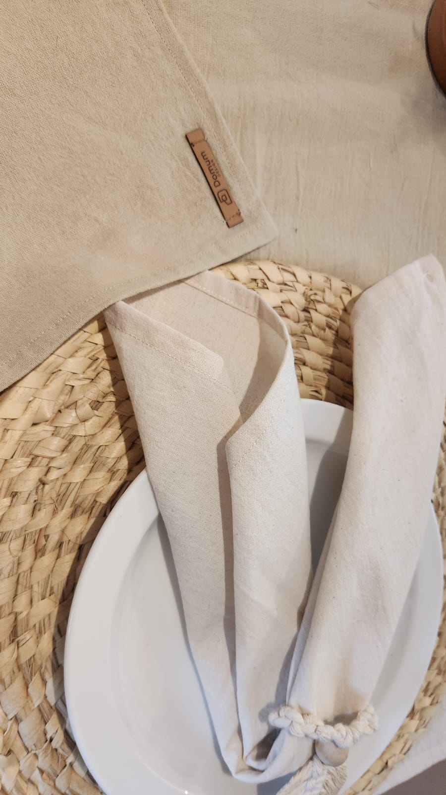
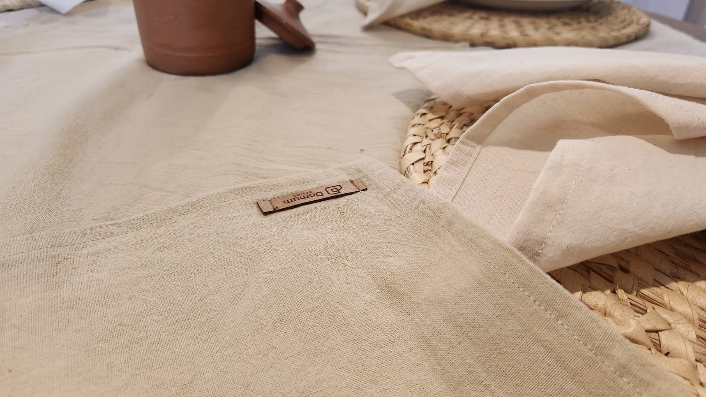
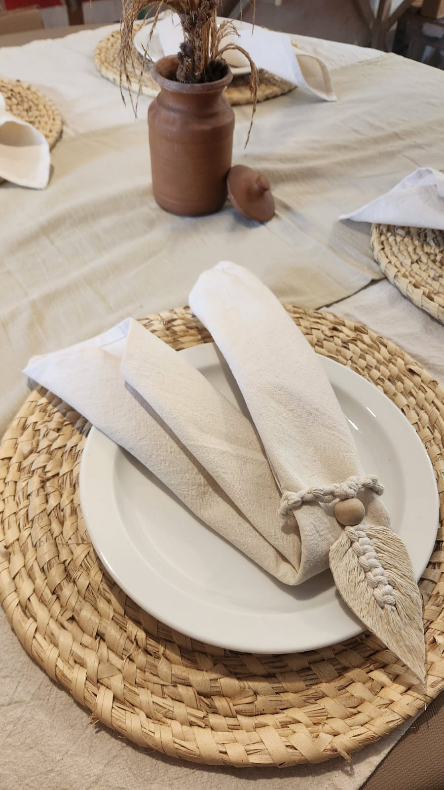
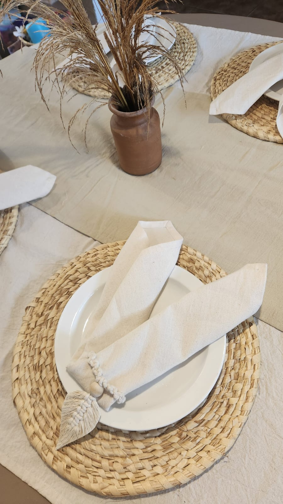

Colección Crudo Chic Exclusivo.
Esta línea resalta la belleza de lo orgánico, lo rústico refinado y el lino en su estado más puro y luminoso.
La pureza del diseño, la calidez del hogar.
La imperfección perfecta de las fibras naturales. Una colección monocromática en tonos crudos y manteca que potencia la luz natural de tu comedor y genera una atmósfera de hotel boutique.



Kit Crudo Chic - Mesa Rectangular Mini (pieza única)
Luminosidad y frescura en formato circular. Un set sutil donde la textura del textil crudo en el mantel y las servilletas y el camino en color khaki aportan volumen sin recargar el ambiente. Además 4 servilleteros confecionados artesanalmente en macramé.
Medidas detalladas (aproximadas)
Mantel: 140 x 190 cm
Camino: 40 x 215 cm
Servilletas: 40 x 40 cm
Detalle de la Tela
El Tusor es una opción liviana pero resistente, ideal para proyectos textiles que requieren buena caída y durabilidad. Presenta una textura arrugada y un teñido semi-artesanal que le aporta un acabado natural y relajado Material: 100% Algodon - Peso: 520 grs - Prelavado: Si
Cuidados
- Apto para lavarropas con agua fría, ciclo suave o a mano. - No centrifugar. Secar al aire libre a la sombra, evitando el sol directo. - Probar reacción al lavado con un pedazo de la tela. - Puede tener un encogimiento residual de +/- 2-3%.
$80.500
🚚 Envío incluido a todo el país por Correo Argentino.
💳 Hasta 2 cuotas sin interés con Mercado Pago.
Comprar por WhatsApp



Kit Crudo Chic - Mesa Rectangular Maxi (pieza única)
Una base neutra e impecable para recibir a tus invitados. Su tono crudo combina a la perfección con vajilla de cerámica artesanal y elementos de madera o hierro. Incluye mantel rectangular crudo, camino de mesa en tono khaki, 4 servilletas color crudo y 4 servilleteros confecionados artesanalmente en macramé.
Medidas detalladas (aproximadas)
Mantel: 140 x 280 cm
Camino: 40 x 215 cm
Servilletas: 40 x 40 cm
Detalle de la Tela
El Tusor es una opción liviana pero resistente, ideal para proyectos textiles que requieren buena caída y durabilidad. Presenta una textura arrugada y un teñido semi-artesanal que le aporta un acabado natural y relajado Material: 100% Algodon - Peso: 520 grs - Prelavado: Si
Cuidados
- Apto para lavarropas con agua fría, ciclo suave o a mano. - No centrifugar. Secar al aire libre a la sombra, evitando el sol directo. - Probar reacción al lavado con un pedazo de la tela. - Puede tener un encogimiento residual de +/- 2-3%.
$84.500
🚚 Envío incluido a todo el país por Correo Argentino.
💳 Hasta 2 cuotas sin interés con Mercado Pago.
Comprar por WhatsApp